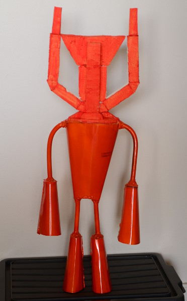

Static Arkeyan Robot
I’ve been building a robot with my boy for quite some time. It doesn’t move, but it does have awesome eyes! The eyes glow from inside the robot.

The robot is built from sheet metal rescued from old vegetable oil tins, with copper cable for arms and legs and a polystyrene foam head. The eyes were made hollow, with paper glued on behind, an RGB LED behind each eye, and then a layer of alfoil to guide all of the light out through the eyes.
I’ve used an Arduino Uno to drive the LEDs. However, the arduino is programmed in C rather than Arduino language. I gave up on the Arduino environment when gnoduino disappeared from the archlinux repo, and I discovered that it’s not really much harder to code it in C. (It also avoids the hassles of programming around the limitations of the Arduino language.) You also get to do exactly what you want.
There are three inputs, one for each colour. Each input should be connected to a momentary pushbutton connected to ground — such as a pair of wires floating around, in true Maker style. Activating an input fades one of the colours smoothly in or out. It looks pretty cool.
So without further delay, the code:
/*
* Robot lights
*
* Controls the eye LEDs on Joshua's Arkeyan Robot
*
* This program copyright (C) 2015 Joshua & Jared Henley, shared GPLv3
* Basically, you can copy it around and change it all you like as long as you
* share under the same terms.
*/
#include <avr/io.h>
#include <avr/interrupt.h>
// Tells us if a colour is to be brightened or darkened.
#define RED_UP 0b00000001 // bit 0 = Red UP
#define RED_DN 0b00000010 // bit 1 = Red DOWN
#define GRN_UP 0b00000100 // bit 2 = Green UP
#define GRN_DN 0b00001000 // bit 3 = Green DOWN
#define BLU_UP 0b00010000 // bit 4 = Blue UP
#define BLU_DN 0b00100000 // bit 5 = Blue DOWN
#define LED_ON 0x00
#define LED_OFF 0xff
uint8_t ramps = 0;
/* Set up an interrupt-driven clock to time the ramp-up/ramp-downs */
volatile uint16_t ticks;
void clock_setup() {
// Leave the prescaler alone
TCCR0B = _BV(WGM02) | _BV(CS00); // Configure timer 0 for CTC mode, no prescaler
TIMSK0 |= _BV(OCIE0A); // Enable CTC interrupt
OCR0A = 255; // Set CTC compare value
}
// Get the current "time".
uint16_t clock_now() {
return ticks;
}
// Determine elapsed time. Acounts for a single overflow.
uint16_t clock_elapsed(uint16_t begin) {
if (ticks < begin)
return ticks + (65535 - begin);
else
return ticks - begin;
}
ISR(TIMER0_COMPA_vect, ISR_BLOCK) {
ticks++;
}
uint16_t start_time;
void pwm_setup() {
// Set up timers 1 and 2 in Fast 8-bit PWM mode, no prescaler
// Timer 1
TCCR1A = _BV(COM1A1) | _BV(COM1B1) | _BV(WGM10);
TCCR1B = _BV(WGM12) | _BV(CS10);
OCR1A = LED_OFF; // Set compare value -- Red LED -- off
OCR1B = LED_OFF; // Set compare value -- Green LED -- off
// Timer 2
TCCR2A = _BV(COM2A1) | _BV(WGM20);
TCCR2B = _BV(WGM21) | _BV(CS20);
OCR2A = LED_OFF; // Set compare value -- Blue LED -- off
}
void setup() {
// Set up output pins
DDRB = 0;
DDRB |= _BV(PB1); // Red pin is output
DDRB |= _BV(PB2); // Green pin is output
DDRB |= _BV(PB3); // Blue pin is output
// Enable internal pull-ups on inputs
PORTD = _BV(PD2) | _BV(PD3) | _BV(PD4);
clock_setup();
pwm_setup();
start_time = clock_now();
sei(); // Enable the global interrupt flag
}
void loop() {
// Read input pins
if (!(PIND & _BV(PD2))) { // Red Pin
if (OCR1A == LED_OFF) {
// LED is off, ramp it on
ramps |= RED_UP;
}
if (OCR1A == LED_ON) {
// LED is on, ramp it off
ramps |= RED_DN;
}
}
if (!(PIND & _BV(PD3))) { // Green Pin
if (OCR1B == LED_OFF) {
// LED is off, ramp it on
ramps |= GRN_UP;
}
if (OCR1B == LED_ON) {
// LED is on, ramp it off
ramps |= GRN_DN;
}
}
if (!(PIND & _BV(PD4))) { // Blue Pin
if (OCR2A == LED_OFF) {
// LED is off, ramp it on
ramps |= BLU_UP;
}
if (OCR2A == LED_ON) {
// LED is on, ramp it off
ramps |= BLU_DN;
}
}
if (clock_elapsed(start_time) >= 800) {
// Alter PWM outputs
if (ramps & RED_UP) {
// Red UP
OCR1A--;
if (OCR1A == LED_ON) {
ramps &= ~(RED_UP | RED_DN);
}
}
if (ramps & RED_DN) {
// Red DOWN
OCR1A++;
if (OCR1A == LED_OFF) {
ramps &= ~(RED_UP | RED_DN);
}
}
if (ramps & GRN_UP) {
// Green UP
OCR1B--;
if (OCR1B == LED_ON) {
ramps &= ~(GRN_UP | GRN_DN);
}
}
if (ramps & GRN_DN) {
// Green Down
OCR1B++;
if (OCR1B == LED_OFF) {
ramps &= ~(GRN_UP | GRN_DN);
}
}
if (ramps & BLU_UP) {
// Blue UP
OCR2A--;
if (OCR2A == LED_ON) {
ramps &= ~(BLU_UP | BLU_DN);
}
}
if (ramps & BLU_DN) {
// Blue DOWN
OCR2A++;
if (OCR2A == LED_OFF) {
ramps &= ~(BLU_UP | BLU_DN);
}
}
start_time = clock_now();
}
}
int main() {
setup();
while (1) {
loop();
}
}This code is compiled against avr-libc. It is licenced GPLv3